Fun with Diffusion & Flow Models
Exploring pretrained Flow Matching text-to-image models (PixNerd-XXL), Euler sampling trajectories, Classifier-Free Guidance, image editing on the natural manifold, multi-view optical illusions (Visual Anagrams & Hybrids), and building flow matching generative UNets from scratch in PyTorch on MNIST.
Exploring the Power of Flow Models
Investigating continuous normalizing flows with the pretrained PixNerd-XXL-P16-T2I model. We examine straight probability trajectories, analyze velocity prediction errors, benchmark iterative Euler integration, amplify semantic signals with Classifier-Free Guidance (CFG), and build creative optical illusions.
Standard diffusion models define curved stochastic paths reversing a stochastic differential equation (SDE). In contrast, Flow Matching defines a deterministic continuous normalizing flow along straight, constant-speed probability trajectories connecting pure Gaussian noise $x_0 \sim \mathcal{N}(0, I)$ at $t=0$ to clean images $x_1$ at $t=1$:
$$x_t = (1-t)x_0 + t x_1 = (1-t)\epsilon + t x_1, \quad t \in [0, 1]$$The true velocity vector field along this trajectory is constant:
$$v_{\mathrm{gt}}(x_t, t) = \frac{dx_t}{dt} = x_1 - x_0 = x_1 - \epsilon$$The neural network $v_\theta(x_t, t, c)$ is trained to regress this vector field conditioned on text embeddings $c$:
$$\mathcal{L}_{\mathrm{CFM}}(\theta) = \mathbb{E}_{t, x_0, x_1} \left[ \| v_\theta(x_t, t, c) - (x_1 - x_0) \|^2 \right]$$1.1 Constructing Noisy Training Inputs
To understand the forward process, we sample a fixed Gaussian noise tensor $\epsilon \sim \mathcal{N}(0, I)$ with seed $180$, and linearly interpolate with our clean personal input image ($x_1$) at timesteps $t \in \{0.25, 0.50, 0.75\}$ using: $x_t = (1-t)\epsilon + t x_1$.
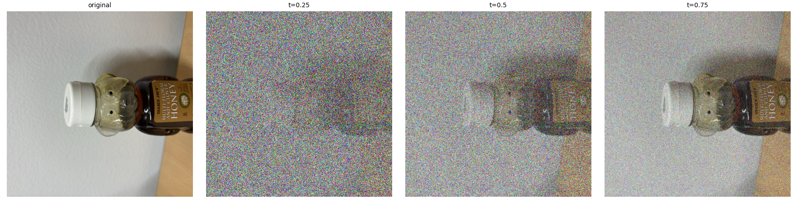
🔍 Click to zoom1.2 Classical Denoising (Gaussian Blur Baseline)
As a classical image processing baseline, we attempt to denoise each saved input by first dividing by $t$ to restore clean signal amplitude ($x_t / t = x_1 + \frac{1-t}{t}\epsilon$), and then applying 2D Gaussian filters. We perform an exhaustive grid sweep over $\sigma \in \{1.0, 2.0, 4.0, 8.0, 16.0\}$ and select the $\sigma$ that minimizes Mean Squared Error (MSE) to the known ground truth clean image.
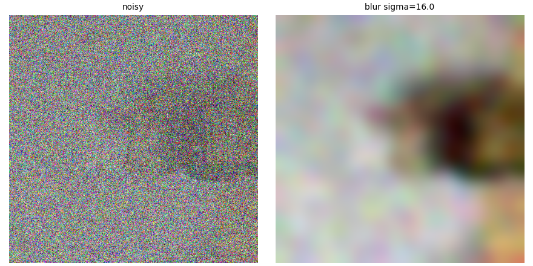
🔍 Zoom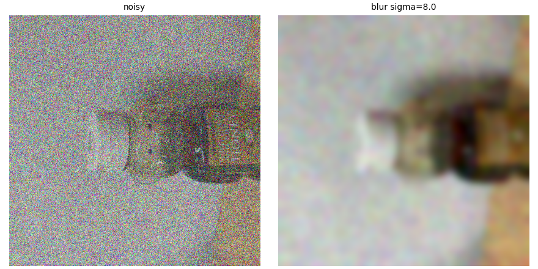
🔍 Zoom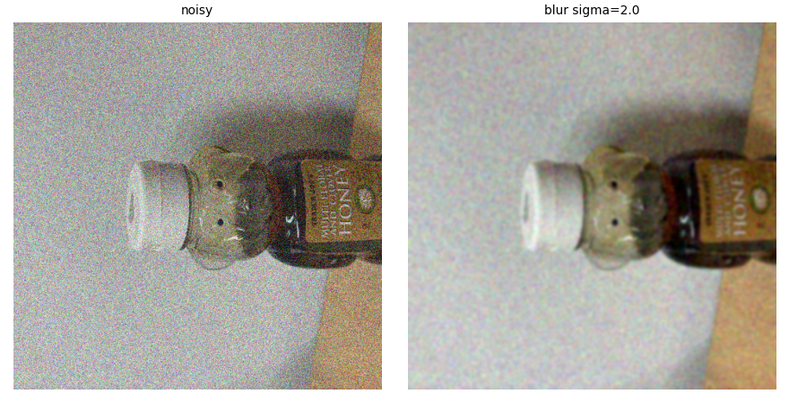
🔍 Zoom1.3 One-Step Denoising with Learned Flow Velocity
Because the flow network predicts the velocity field $\hat{v}_t = v_\theta(x_t, t, c) \approx x_1 - x_0$, and since $x_t = x_1 - (1-t)(x_1 - x_0)$, we can perform a direct one-step estimation of the clean image:
$$\hat{x}_1 = x_t + (1-t) v_\theta(x_t, t, c)$$
We evaluate one-step denoising on our saved noisy inputs using the generic prompt "a high quality photo":
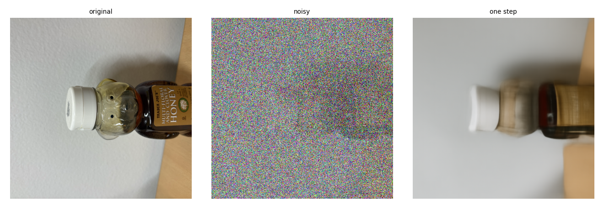
🔍 Zoom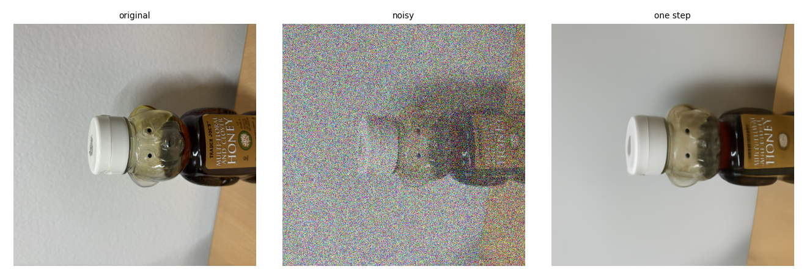
🔍 Zoom1.4 Visualizing Velocity & Error Analysis
To understand what the neural network actually computes, we isolate the predicted spatial update $(1-t)\hat{v}_t$ and compare it against the ground-truth update $(1-t)v_{\mathrm{gt}} = x_1 - x_t$. We compute the per-pixel RMS error across RGB channels:
$$E_t = \sqrt{\frac{1}{3} \sum_{c \in \{R,G,B\}} \left[ (1-t) \left( \hat{v}_t^{(c)} - v_{\mathrm{gt}}^{(c)} \right) \right]^2}$$All velocity updates are visualized using a shared signed RGB scale centered at middle gray ($0.5$), and error heatmaps use a consistent linear scale.
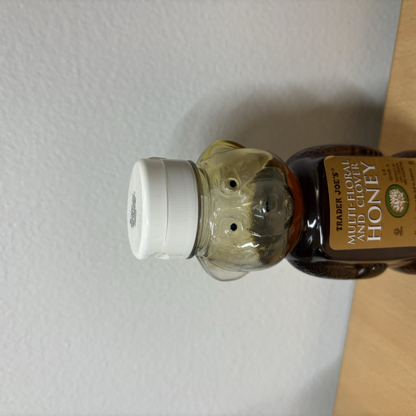
🔍 Original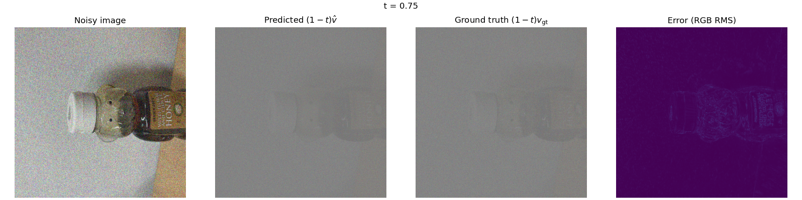
🔍 Zoom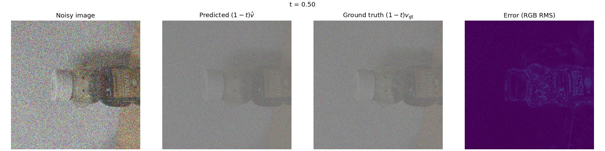
🔍 Zoom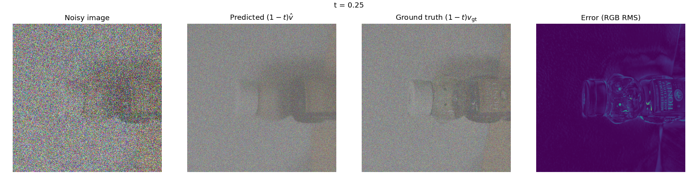
🔍 Zoom1.5 Iterative Denoising with Euler Sampling
Because the true velocity field bends along the manifold, a single linear step is inaccurate for large $(1-t)$. Instead, we use Euler integration with a small step size $h = 0.02$:
$$x_{t+h} = x_t + h \cdot v_\theta(x_t, t, c)$$Starting from our saved noisy input at $t_{\mathrm{start}} = 0.50$, we execute 25 Euler updates to reach $t=1.00$. Below is the integration trajectory, showing states at $t \in \{0.50, 0.60, 0.70, 0.80, 0.90, 1.00\}$:
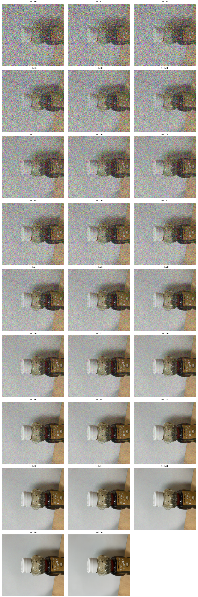
🔍 Zoom TrajectoryComparative Analysis: Classical vs. One-Step vs. Euler Sampling
We compare all denoising paradigms on the exact same $t=0.50$ noisy input:
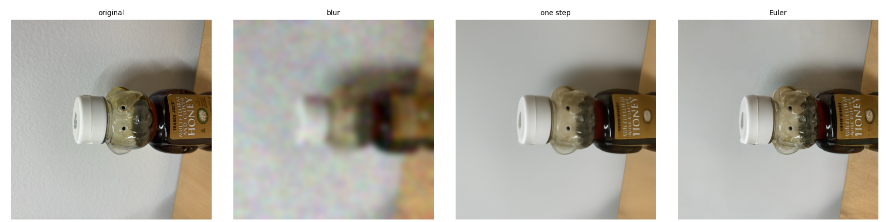
🔍 Zoom Comparison1.6 Generating Images from Pure Noise
By initializing at $t_{\mathrm{start}} = 0$ with pure Gaussian noise $x_0 \sim \mathcal{N}(0, I)$ and integrating across 50 Euler steps ($h=0.02$)
to $t=1$, we can generate images from scratch using the prompt "a high quality photo".
Below are 5 sampled images generated from seeds 180 to 184:
 🔍 Zoom Samples
🔍 Zoom Samples
2.1 Classifier-Free Guidance (CFG)
To resolve the lack of vibrancy and poor prompt alignment in unguided generation, we implement Classifier-Free Guidance (CFG).
At each timestep $t$, we compute both a conditional velocity prediction $v_c = v_\theta(x_t, t, c)$ with "a high quality photo"
and an unconditional velocity prediction $v_u = v_\theta(x_t, t, \emptyset)$ using the empty-string null prompt:
Setting $w = 7.0$ and step size $h = 0.02$, we generate images using the exact same random initial noises (seeds 180–184) from Section 1.6:
 🔍 Zoom CFG Samples
🔍 Zoom CFG Samples
3.1 Image-to-Image Editing (SDEdit on the Flow Manifold)
Following the SDEdit paradigm adapted to flow models, we corrupt a clean image to a starting time $t_{\mathrm{start}}$:
$x_{t_{\mathrm{start}}} = (1-t_{\mathrm{start}})\epsilon + t_{\mathrm{start}}x_1$, and then integrate forward from $t_{\mathrm{start}}$ to $1$
using Euler sampling with CFG ($w=7$) and the generic prompt "a high quality photo".
We evaluate the seven recommended starting times: [0.02, 0.04, 0.06, 0.10, 0.14, 0.25, 0.50].
 🔍 Zoom
🔍 Zoom
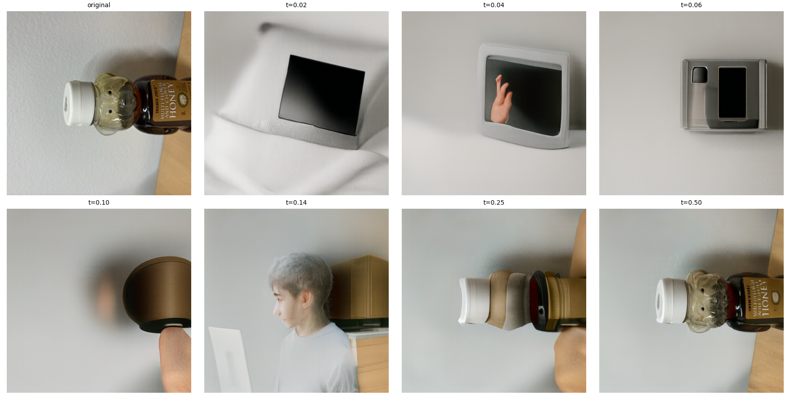
🔍 Zoom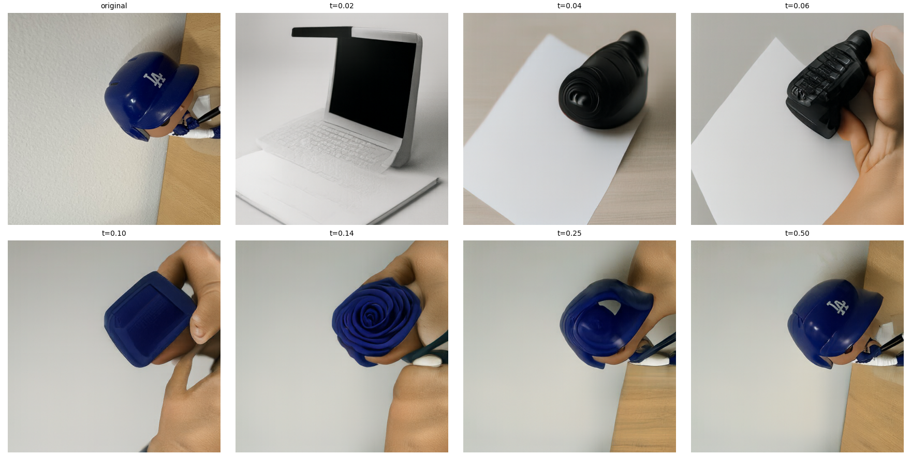
🔍 ZoomEditing Hand-Drawn and Web Images
Non-photorealistic inputs (such as crude hand sketches or digital illustrations) sit far outside the manifold of natural photographs. Noising and denoising forces these inputs onto the natural image manifold, synthesizing photorealistic renderings from sketches!
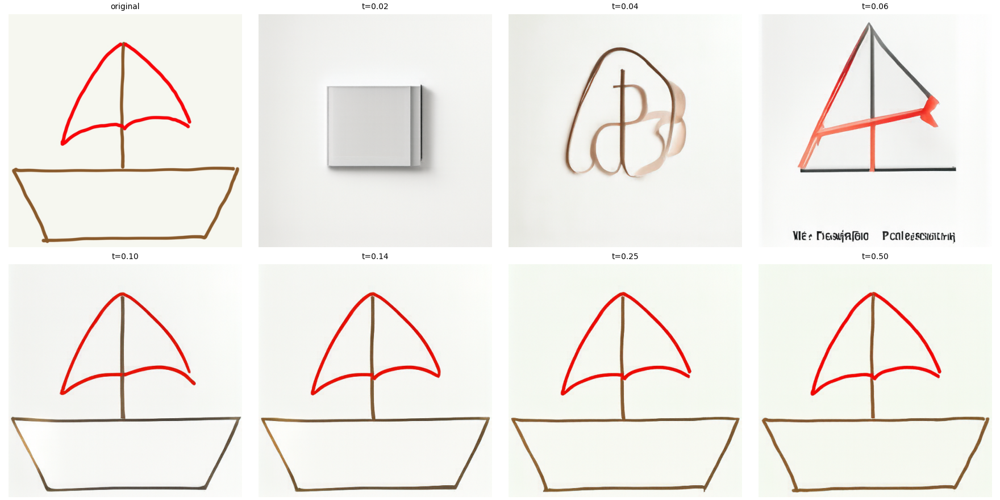
🔍 Zoom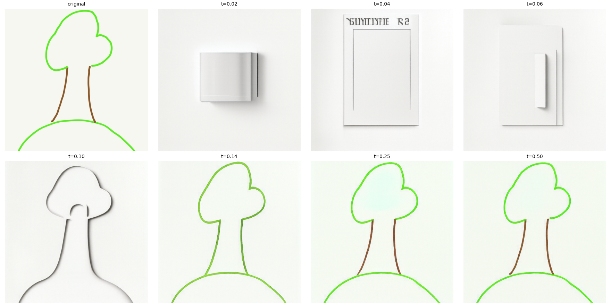
🔍 Zoom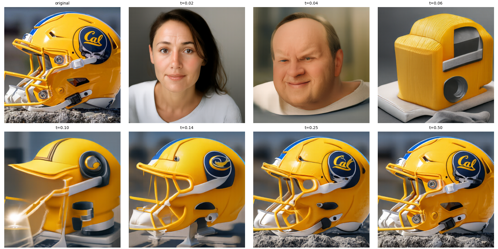
🔍 Zoom3.2 Text-Guided Image Editing
By replacing the generic prompt with a targeted descriptive prompt, we steer the flow trajectory toward specific artistic styles or concepts.
We evaluate the same 7 starting times [0.02, 0.04, 0.06, 0.10, 0.14, 0.25, 0.50]:
 🔍 Zoom
🔍 Zoom
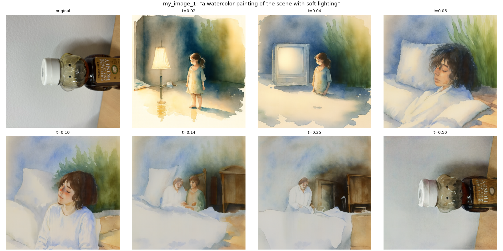
🔍 Zoom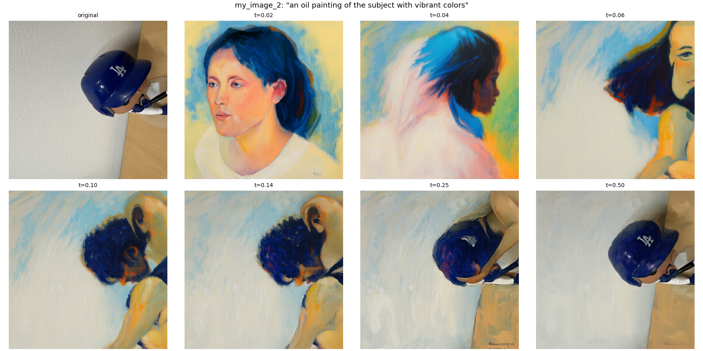
🔍 Zoom3.3 Visual Anagrams (Multi-View Optical Illusions)
We can generate captivating optical illusions that reveal completely different scenes when rotated $180^\circ$. At each Euler integration step, we compute the guided velocity under prompt $p_1$, flip the current state $180^\circ$, compute the guided velocity under prompt $p_2$, rotate it back, and take the average velocity:
$$v_1 = v_{\mathrm{cfg}}(x_t, t, p_1)$$ $$v_2 = \mathrm{rotate}_{180^\circ} \left( v_{\mathrm{cfg}}(\mathrm{rotate}_{180^\circ}(x_t), t, p_2) \right)$$ $$v = \frac{1}{2} (v_1 + v_2)$$ 🔍 Static Views
🔍 Static Views
✨ Interactive Anagram 1 (Hover or Click to Rotate 180°)
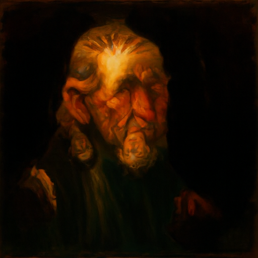
 🔍 Static Views
🔍 Static Views
✨ Interactive Anagram 2 (Hover or Click to Rotate 180°)
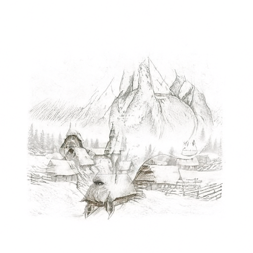
3.4 Hybrid Images (Factorized Frequency Flow)
Extending our frequency decomposition from Project 2, we generate hybrid images by combining low frequencies from one prompt velocity with high frequencies from another prompt velocity during every Euler update:
$$v = f_{\mathrm{lowpass}}(v_1) + v_2 - f_{\mathrm{lowpass}}(v_2)$$where $f_{\mathrm{lowpass}}$ is a 2D Gaussian filter with $\sigma = 16$ and kernel size $265 \times 265$. Prompt $p_1$ dictates the dominant structure when viewed from afar, while prompt $p_2$ dominates fine detail upon close inspection.
Hybrid 1: Skull (Distant) + Waterfall (Close-Up)
Low-Frequency / Distant: "a lithograph of a skull" • High-Frequency / Close: "a lithograph of a waterfall"
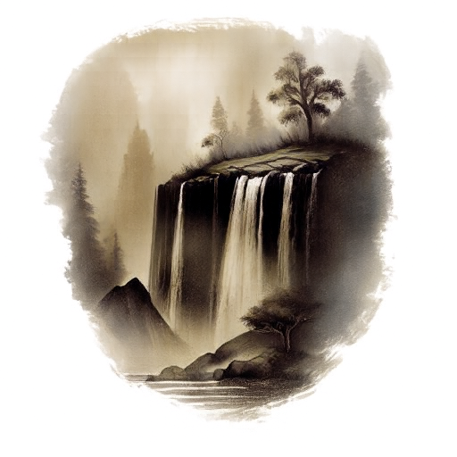
Hybrid 2: Cat (Distant) + Forest (Close-Up)
Low-Frequency / Distant: "a lithograph of a cat" • High-Frequency / Close: "a lithograph of a forest"
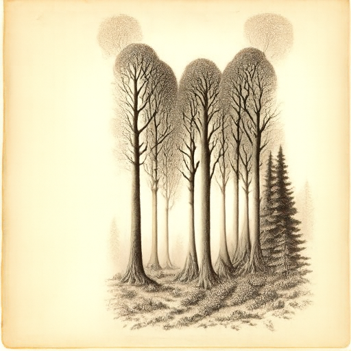
Flow Matching from Scratch!
Designing and training generative neural networks from scratch in PyTorch on the MNIST dataset. We build multi-scale UNets, train single-step denoisers, benchmark out-of-distribution noise performance, derive the mathematical explanation for denoising pure noise, and incorporate time and class conditioning via modulated FCBlocks to generate clean digits with Classifier-Free Guidance.
Part 1.1: Implementing the UNet Architecture
We construct a modular convolutional UNet featuring:
- ConvBlock:
Conv2d(in, out, 3, padding=1) → BatchNorm2d → GELU. - DownBlock:
AvgPool2d(2) → ConvBlock → ConvBlock. - UpBlock:
ConvTranspose2d(in, out, 2, stride=2) → Concatenate skip connection → ConvBlock → ConvBlock. - Flatten & Unflatten: Bottleneck pooling and dimension reshaping for conditioning signal injection.
- Default hidden channel dimension: $D = 128$.
Part 1.2: Using the UNet to Train a Denoiser
To train an unconditional single-step denoiser, we corrupt clean MNIST training digits $z \in [0, 1]$ with additive Gaussian noise $\epsilon \sim \mathcal{N}(0, I)$ at varying standard deviations $\sigma$:
$$z_{\mathrm{noisy}} = \mathrm{clamp}(z + \sigma \epsilon, 0.0, 1.0)$$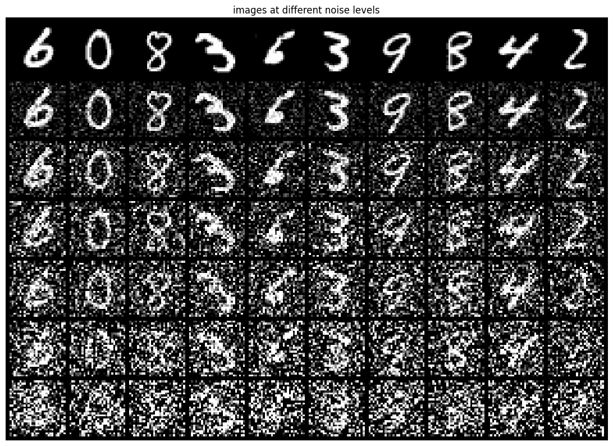
🔍 ZoomPart 1.2.1: Denoiser Training & Evaluation
We train our unconditional UNet ($D=128$) to denoise digits corrupted specifically at $\sigma = 0.5$ using Adam optimizer (learning rate $10^{-4}$, batch size 256, 5 epochs) minimizing MSE reconstruction loss:
$$\mathcal{L} = \mathbb{E}_{z, \epsilon} \left[ \| \mathrm{UNet}(z + 0.5\epsilon) - z \|^2 \right]$$ 🔍 Zoom Loss
🔍 Zoom Loss
 🔍 Zoom
🔍 Zoom
 🔍 Zoom
🔍 Zoom
Part 1.2.2: Out-of-Distribution (OOD) Testing
Our denoiser was trained exclusively on digits corrupted with $\sigma = 0.5$. We now evaluate its generalization capability on unseen noise levels $\sigma \in [0.0, 0.2, 0.4, 0.5, 0.6, 0.8, 1.0]$:
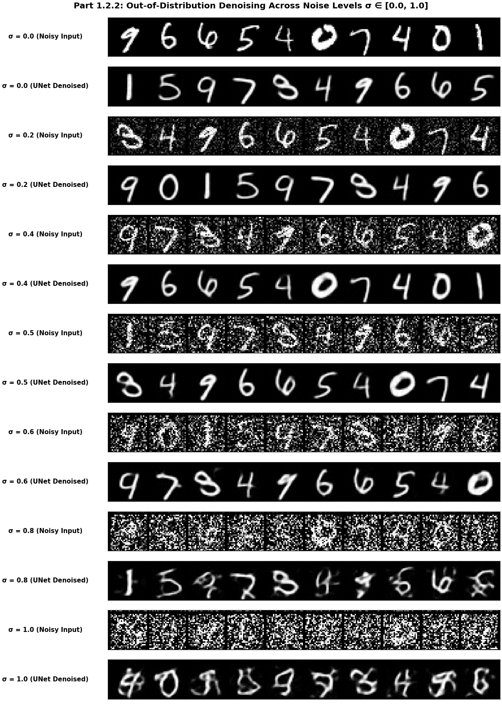
🔍 Zoom Summary- Under-noised regime ($\sigma < 0.5$): When fed clean or lightly noised digits ($\sigma = 0.0, 0.2$), the denoiser still expects severe high-frequency noise. Consequently, it removes high frequencies, slightly blurring sharp corners and thinning strokes.
- Matched regime ($\sigma = 0.5$): Denoising performance is optimal; the network strikes an ideal balance between noise suppression and edge preservation.
- Over-noised regime ($\sigma > 0.5$): At $\sigma = 0.8$ and $1.0$, Gaussian noise obliterates digit topology. The network outputs faint, ghostly shapes or generic loop fragments with high residual artifacts, illustrating out-of-distribution failure.
Part 1.2.3: Denoising Pure Noise & The Bayes Optimal Predictor
What happens if we train a fresh UNet ($D=128$) where the input is pure Gaussian noise $x_0 \sim \mathcal{N}(0, I)$ and the target is a clean MNIST digit $x_1$?
 🔍 Zoom Loss
🔍 Zoom Loss
 🔍 Zoom
🔍 Zoom
 🔍 Zoom
🔍 Zoom
Pure random Gaussian noise $x_0$ carries zero mutual information with the clean target digit $x_1$: $p(x_1 \mid x_0) = p(x_1)$.
Under Mean Squared Error (L2) loss, the optimal Bayes estimator $\hat{x}(x_0)$ minimizing expected loss is the conditional expectation:
$$\hat{x}(x_0) = \arg\min_{\hat{x}} \mathbb{E}_{x_1 \mid x_0} \left[ \| \hat{x} - x_1 \|^2 \right] = \mathbb{E}[x_1 \mid x_0] = \mathbb{E}[x_1]$$Because $x_0$ provides no conditioning clue as to which digit $(0-9)$ was intended, any sharp digit guess (e.g. predicting a "1" when the true target was a "0") would incur massive squared error. The mathematical optimum that minimizes overall loss across the entire dataset is the pixel-wise mean of all 60,000 MNIST training images. This produces the characteristic glowing "0"/"8"-like centroid blob!
Part 2.1: Adding Time Conditioning to the UNet
To enable multi-step continuous generation, the model must know the current timestep $t \in [0, 1]$.
We construct a dedicated FCBlock:
FCBlock: Linear(F_in, F_out) → GELU → Linear(F_out, F_out)The scalar timestep $t$ is mapped into two modulation vectors $t_1, t_2$ which modulate the unflatten and upsampling blocks via feature multiplication:
$$\mathrm{unflatten} \leftarrow \mathrm{unflatten} \cdot t_1$$ $$\mathrm{up}_1 \leftarrow \mathrm{up}_1 \cdot t_2$$Part 2.2: Training the Time-Conditioned Flow Matching Model
We train our Time-Conditioned UNet ($D=128$) to regress the vector field flow: given random clean digits $x_1$ and pure Gaussian noise $x_0 \sim \mathcal{N}(0, I)$, we sample random $t \sim \mathcal{U}(0, 1)$, construct $x_t = (1-t)x_0 + t x_1$, and train the network to predict the target velocity $v = x_1 - x_0$. We train for 10 epochs with Adam (initial learning rate $10^{-2}$, batch size 256) and an exponential learning rate decay scheduler $\gamma = 0.1^{1/10} \approx 0.7943$:
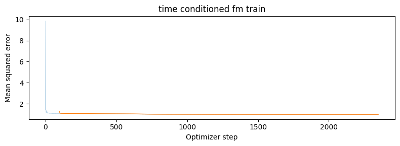
🔍 Zoom LossPart 2.3: Sampling from the Time-Conditioned UNet
Using Algorithm B.2, we sample generated digits starting from pure noise $x_0 \sim \mathcal{N}(0, I)$ at $t=0$ and integrate across 50 Euler timesteps to $t=1$: $x_{t+\Delta t} = x_t + \Delta t \cdot u_\theta(x_t, t)$.
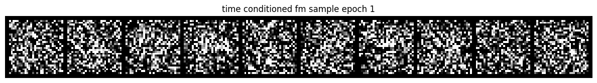
🔍 Zoom SamplesPart 2.4: Adding Class Conditioning to the UNet
To achieve precise control over which digit is synthesized, we condition the UNet on digit classes $c \in \{0, \dots, 9\}$
encoded as 10-dimensional one-hot vectors.
We introduce class-conditioning FCBlocks, and inject conditioning via combined affine modulation:
To enable Classifier-Free Guidance at sampling time, we implement class dropout with probability $p_{\mathrm{uncond}} = 0.1$, setting the one-hot vector $c = \mathbf{0}$ during training.
Part 2.5: Training Class-Conditioned UNet & Learning Rate Scheduler Ablation
We train the Class-Conditioned UNet for 10 epochs. We also conduct an ablation study investigating whether the exponential learning rate scheduler can be removed while maintaining training stability and generative fidelity.
 🔍 Zoom
🔍 Zoom
 🔍 Zoom
🔍 Zoom
When training with the exponential scheduler, the model starts at an aggressive initial learning rate of $10^{-2}$ and anneals down to $10^{-3}$. If one simply removes the scheduler while maintaining a high constant learning rate ($10^{-2}$), gradient steps remain excessively large in late epochs, causing the optimizer to overshoot local minima and oscillate or diverge.
To compensate for the loss of the scheduler, we lowered the fixed learning rate from $10^{-2}$ to $10^{-3}$. This conservative learning rate prevents late-stage gradient instability. The trade-off is that training ramps up slightly more gradually in the first two epochs, but avoids oscillations and maintains stable convergence, yielding equivalent digit generation quality without the added complexity of a scheduler.
Part 2.6: Sampling with Classifier-Free Guidance
With both time and class conditioning established, we sample using Classifier-Free Guidance with guidance scale $\gamma = 5.0$ over 300 Euler steps:
$$v = (1 + \gamma) u_\theta(x_t, t, c) - \gamma u_\theta(x_t, t, \emptyset)$$We generate four independent instances for each digit class from $0$ to $9$ (40 digits total):
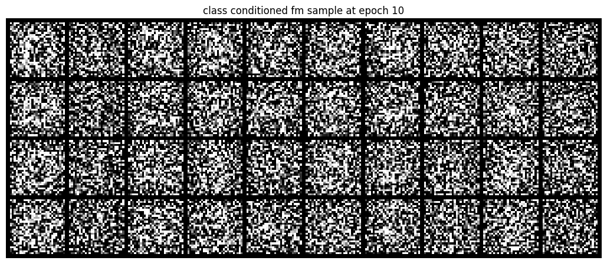
🔍 Zoom Generated DigitsKey Takeaways & Reflections
Across this project, we experienced both ends of the continuous generative modeling spectrum:
- Straight Paths Over Curvature: Flow matching straight probability paths ($x_t = (1-t)x_0 + t x_1$) drastically simplify velocity regression and make Euler numerical integration stable and rapid.
- The Indispensability of CFG: Classifier-Free Guidance is the key mechanism that converts muddy, mode-averaged outputs into crisp, high-contrast, visually compelling samples—both for large-scale text-to-image models (PixNerd) and for custom-trained UNets on MNIST.
- Manifold Projection for Creative Control: SDEdit-style noise interpolation provides an intuitive continuum between fidelity and creative reimagination, enabling sketch-to-photo synthesis, seamless style transfer, multi-view visual anagrams, and frequency hybrid illusions.